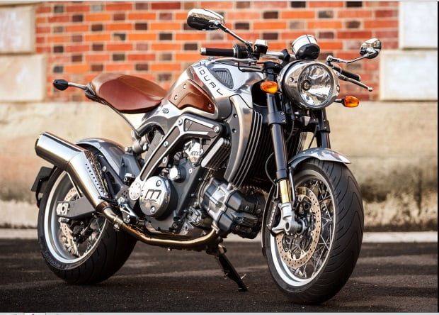

Esta motocicleta francesa exclusiva e innovadora se coloca entre las motos más caras del mundo, gracias a su motor doble de 1036 cc, acoplado en una transmisión de 6 velocidades, capaz de entregar 104 caballos de potencia. Los puños de la moto son fabricados en cuero, al igual que el tablero de instrumentos, la personalización de colores, madera y metal, la convierten en una pieza exclusiva para los adictos a las motos elegantes.Con un precio de 150 mil euros, se ubica entre las motos más caras del mundo.
